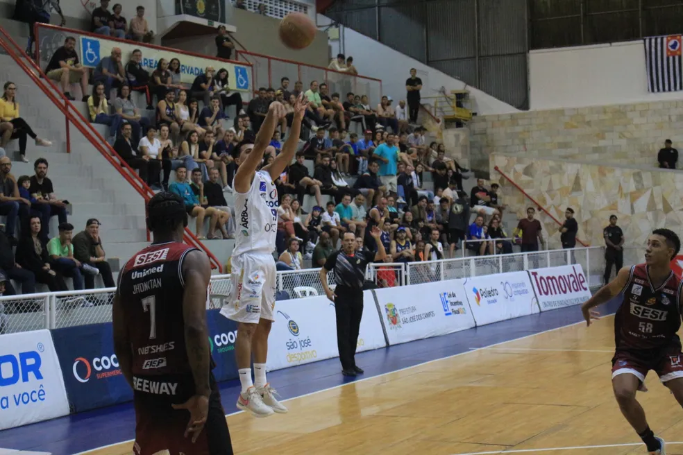

São José busca reabilitação no Paulista de Basquete em duelo contra Mogi
O São José Basketball tenta se reabilitar no Campeonato Paulista de Basquete na noite desta quinta-feira, 24. Às 20h, os joseenses visitam o Mogi, no ginásio Hugo Ramos. A equipe vem de duas derrotas seguidas no estadual.
As duas derrotas foram para Osasco e Franca, ambas no ginásio Linneu de Moura. Em quatro partidas disputadas, são três derrotas e uma vitória. A campanha é a mesma do Mogi.
– Temos o desejo de nos recuperarmos e conseguirmos mais uma vitória no campeonato, mas nosso foco está principalmente em progredir jogo a jogo. Estamos trabalhando para o time melhorar e sabemos que na próxima partida temos que atuar melhor em relação ao jogo contra Franca. Ainda temos coisas para melhorar e estamos focados nisso, porque progredindo teremos mais chances de alcançarmos os resultados que almejamos – disse o treinador Sebastián Figueredo.
O São José segue com o desfalque do ala-armador Augusto Cabral, em fase de recuperação de lesão, para esta partida. Douglas dos Santos e Matheus Leal, que também não atuaram no duelo contra o Franca, são dúvidas para o jogo diante dos mogianos.
Argentina tenta reagir
A Argentina voltou melhor para o terceiro set, impondo dificuldades ao Brasil. Num erro de ataque de Gabi, as hermanas fizeram 5 a 3. Instantes depois foi a vez de Júlia Bergmann atacar para fora. Zé Roberto pediu desafio, e a arbitragem pegou um leve toque no bloqueio. Ponto das brasileiras, que diminuíram para 6 a 5. O empate do Brasil só foi acontecer quando Thaísa fez 8 a 8. A virada veio com Kisy, que marcou 12 a 11. A Argentina sentiu o golpe e, minutos depois, Erika Mercado parou no bloqueio brasileiro: 16 a 13. Sem forças para reagir, a seleção visitante viu o Brasil fazer 21 a 15 num ponto de Carol. Com a vitória mais que encaminhada, o time verde-amarelo tratou de fechar a partida em 25 a 17.